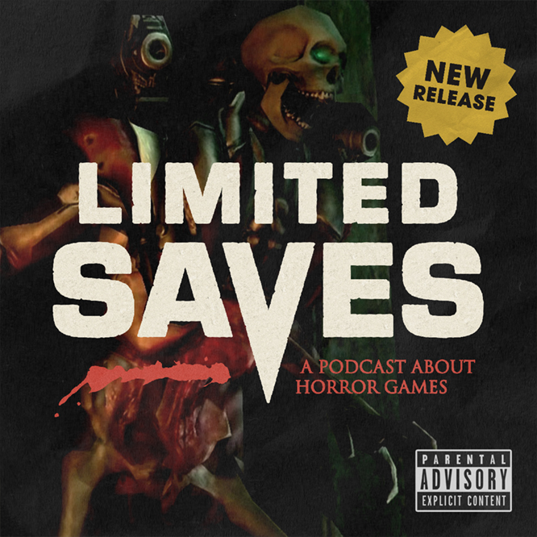

2022.07.16 01: DOOM 3 – SEE YOU IN HELL
The DOOM 3 Defender has logged on. In the FIRST episode of Limited Saves, I spend way too much time defending the flashlight and shotgun of DOOM 3. Hot takes aside, I still really like this game.
Chapters →
00:00 Intro
00:29 Black Sheep
10:50 Opening & Basics
19:29 Weapons & Enemies
32:09 Demonic Diversions
37:07 Endgame & Wrap Up
43:52 Outro
Things mentioned in the episode →
DOOM 3 (vanilla) on Steam
Enhanced Edition Mod
Background music by Freedy Sanchez →
YouTube: https://www.youtube.com/user/drackfreeee
Bandcamp: https://freedysanchez.bandcamp.com/
Other audio used →
Several clips from DOOM 3, of course.
One clip from Tales from the Hood 2.
Ambience from Space Ghost: Coast to Coast.